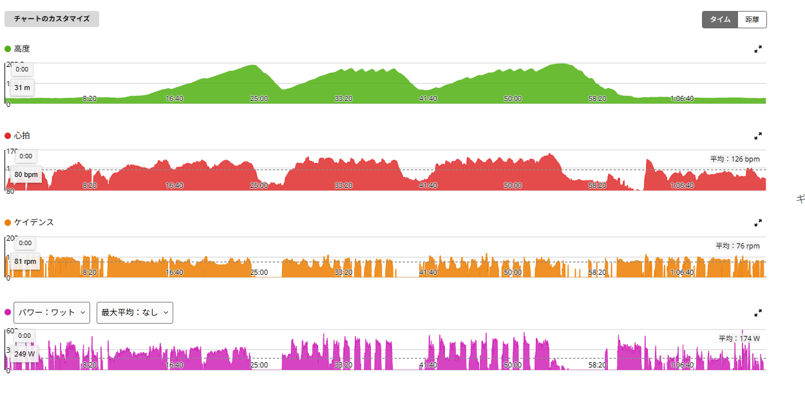
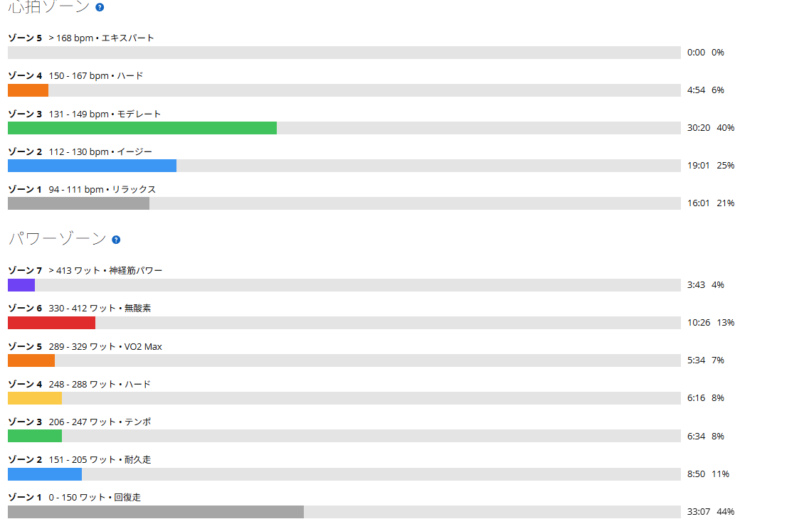

30秒ON／30秒OFFはぬるかった。でも練習の方向は見えた
今日は唐沢で30秒ON／30秒OFFのインターバルを試してきた。TSS101.4、IF0.904。数字だけ並べれば、それなりに重い日である。ところが実際の体感は「全然きつくない」だった。メニューのやり方を間違えたのではないかと、途中で不安になるくらいぬるい。
ただ、この違和感には理由があった。あとからゾーンを見て納得し、ついでに今後どの練習を優先すべきかまで整理がついてしまった。失敗と呼ぶには収穫が多い日だったので、そのまま書いておく。

5倍付近を踏む機会が、普段まったくない
このメニューを始めた理由は単純で、富士ヒルで5倍以上で踏むシーンが容易に想像できた。なので普段から5倍付近の出力に触れておく必要があると思ったからだ。今の私の場合、375W前後がそこにあたる。
ところが普段の外ライドで375Wを意識して踏む場面はほとんどない。太平や琴平ではもっと低い出力を長く維持するし、ゴルビーでも330W前後を5分続ける形になる。どちらも大事な練習だが、「5倍付近に入る」という刺激とは別物だ。短時間でいいから普段使わない出力域に身体を慣らしたい。そう考えて、まず30秒ON／30秒OFFから始めることにした。
26.46km・NP249W・TSS101.4
- 全体26.46km / 1時間14分57秒 / 獲得554m
- 負荷平均174W / NP249W / IF0.904 / TSS101.4 / 最大593W
- 心拍・回転平均126bpm / 最大163bpm / 平均76rpm / 左右52％：48％
- 環境平均28.5℃ / 最高33.0℃ / 推定発汗1,000ml
- 効果有酸素TE3.4 / 無酸素TE1.2
TSS101.4。前日にSST25分×2をやった翌日としては十分な数字に見える。それなのに、走り終えた時点での感想は「これで合っているのか」だった。
1セット目は、途中で頂上に着いてしまった
1セット目、30秒ONと30秒OFFを交互に繰り返した。ただし途中で唐沢の頂上に近づいてしまい、セットの最中に下りへ入る場面があった。当然そこではパワーが落ちる。
実走でやると、ローラーのようにONもOFFも自分で完全に制御できるわけではない。勾配は変わるし、頂上には着くし、コーナーでは踏めない。おまけに30秒という短さだと、出力を上げた直後にOFFが来て、またすぐ次のONが来る。回数も多いので、何本目かが分からなくなる。
2セット目のほうが、身体の使い方は良かった
2セット目は、始める前に区切りを決めてからスタートした。あらかじめ本数の基準を作っておけば、何本やったか分からなくなる問題は避けられる。
そして内容としては、2セット目のほうが明らかに良かった。低回転でも上半身と下半身を力ませず、重いギアを踏み潰すのではなく回す。肩や腕に力を入れず、骨盤を安定させて、脚だけで押し込まない。前日のローラーではうまく再現できなかった「腰で乗る」感覚が、実走では少し戻ってきた。出力そのものより、力まずに高いトルクをかけられたことが今日の収穫だと思う。
余裕があったので1本足したら、そっちの方が良かった
予定の本数を終えた時点でも、まだかなり余裕があった。なので1本だけ追加し、最後は頂上までONを続けた。その1本がこれである。
- 追加した最後の1本1分18秒 / 平均366W / NP394W / 最大475W / 心拍151〜161bpm
30秒区間より長く、しかも5倍に近い出力を維持できている。つまり今日のメニューで能力を出し切ったわけではない。30秒では短すぎて、出力が上がりきったところで終わっていた部分があったということだ。おまけとして足した1本が一番狙いに近いというのは、なかなか締まらない。
ゾーンを見たら、ぬるさの理由が分かった
あとから心拍ゾーンとパワーゾーンを確認して、体感とのズレの正体がはっきりした。

パワーだけ見れば、ゾーン7が3分43秒、ゾーン6が10分26秒。合わせて14分09秒も高出力域に入っている。短時間の反復としては十分だ。ところが心拍はゾーン5が0秒、ゾーン4も4分54秒（6％）にとどまり、一番長かったのはゾーン3の30分20秒（40％）だった。
つまり脚では何度も高い出力を出しているのに、心肺が上がりきる前にOFFか下りへ入っていた。TSS101.4という数字も、VO2系として限界まで追い込んだ結果ではなく、登坂・移動・下り・短い高出力を含めた75分全体の積み上げに近い。体感がぬるかったのはサボったからではなく、30秒では心拍と呼吸が積み上がる前に終わり、そこへセット途中の下りで回復が入ったからだった。
失敗ではないが、狙った刺激はぼやけた
完全な失敗ではない。膝の痛みも違和感も出ていないし、低回転で力まずに踏む感覚は良くなった。高い出力へ入る練習もできているし、TSSも100を超えて有酸素負荷としては十分積めている。
ただ最初に考えていた「短時間でも5倍付近を何度も踏む」という目的に対しては、30秒は少し短かった。加えて唐沢との相性もある。ONが短く回数が多い、頂上に着けば下りに入る、セット途中で心拍が落ちる、回数管理に意識を取られる。メニュー自体は成立していても、狙っていた刺激がぼやけてしまった。
次は60秒ON／60秒OFFにする
そこで唐沢での短時間反復は60秒ON／60秒OFFへ変更する。30秒より長ければ、出力を立ち上げたあとに実際へ5倍付近で踏む時間を確保できる。
- ON / OFF365〜380W / 軽く回す
- セットの区切り1登坂＝1セット。頂上に着いたら終了、下りはセット間レスト
- 本数 / 合計ON2〜3登坂 / 8〜12分
唐沢では規定本数を無理にこなそうとしない。登りの途中で60/60を繰り返し、頂上に着いたらそこで終わりにする。下りに入るのは失敗ではない。目的は心拍を一度も落とさずVO2max状態を維持することではなく、実走で5倍付近へ入り、力まずに高出力を出すことだからだ。それなら「1登坂＝1セット」で成立する。
これからは3本柱でいく
今日の30/30をきっかけに、平日の練習方向が整理できた。役割の違う3種類を、優先順位をつけて回していく。
- 1. 長い実走高強度太平→琴平→唐沢。移動込み約2時間。後半まで踏み続ける力を作る
- 2. VO2持続ゴルビー5分×5本。上限を引き上げる
- 3. 短時間反復唐沢60/60。5倍付近へ慣れる
最優先は長い実走高強度である。理由は、今の課題が「最大出力が低いこと」ではないからだ。太平では320W以上、琴平でも290W前後、白石は29分16秒・276W。短い時間ならそれなりに踏めている。足りないのは290〜300W付近をもっと長く維持することと、疲労してからもう一度踏み直すこと。富士ヒルで必要なのは短時間だけ高い数字を出すことではない。
2番目がゴルビーになる。前回は348W、339W、333W、323W、317Wと1本目から5本目で31W落ちた。能力不足というより1本目を飛ばしすぎである。今後は平均値を上げるより、1本目を335W前後に抑え、後半も325W以上、1本目と5本目の差を15W以内にすることを狙う。長い実走が本番に近い能力なら、ゴルビーはその上限を押し上げる練習だ。
3番目が60/60。優先順位は最後だが不要という意味ではない。5倍付近へ入る感覚、高出力へ素早く入ること、力まずに高トルクを出すこと、そして高い出力への心理的な抵抗を減らすこと。これまで手薄だった部分を補う役割がある。
週の組み方は、週末しだいで変える
平日の基本配置は月曜に長い実走高強度、水曜に60/60、金曜にゴルビーとする。ただし土日は友人とのライドが入るので、毎週これで固定はしない。
週末が会話ベースのゆるい内容なら、月曜は通常どおり太平→琴平→唐沢でいい。逆に白石のような大きな山岳ライドが入った週は、長い実走高強度の役割はすでに満たされている。その場合は月曜を回復に変え、水曜の60/60と金曜のゴルビーを優先する。土日とも高負荷が続いたなら月曜は完全レストにする。
時間がない日は60/60、強度日を1回しか入れられないなら長い実走、外へ出る時間がなければゴルビー。曜日を守ること自体が目的ではなく、3種類の刺激を必要な順に入れることが目的である。
今日やってみて思ったこと
今日の30/30は正直ぬるかった。TSSは100を超え、IFも0.904。それでも体感には余裕があり、膝も痛くない。最初はやり方を間違えたのかと思った。
ただ実際に試したから分かったこともある。30秒では短い、唐沢では回数管理が難しい、頂上と下りは無視できない。そして低回転でも力まずに踏む感覚は、2セット目のほうが良くなった。失敗ではなく、次の形へ進むための試行だったと思う。今日の一番の収穫はTSSでも最大パワーでもなく、これから何を優先して練習するかがはっきりしたことだ。
次に見るポイント
- 60/60365〜380Wを揃えられるか。1登坂＝1セットで無理なく管理できるか
- フォーム低回転でも上半身と下半身を力ませずに踏めるか
- ゴルビー1本目を飛ばさず、5本の差を15W以内に収められるか
- 長い実走太平→琴平→唐沢で後半まで出力を維持できるか
- 組み立て週末の内容に応じて月水金を動かせるか。3種類入れても故障兆候が出ないか
練習メニューを増やすことが目的ではない。長い実走で持続力を伸ばし、ゴルビーで上限を押し上げ、60/60で5倍付近へ慣れる。役割を分けながら、富士ヒルで長く踏める身体を作っていきたい。